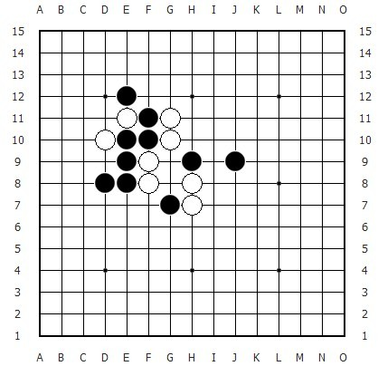
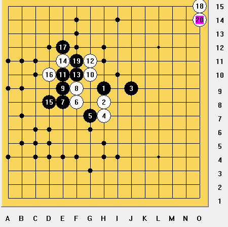

找做v点
#1 找做v点 作者：蓝天蓝 发表时间：2011-5-5 7:49:10
找做v点
快乐每一天 出在QQ群
#2 Re:找做v点 作者：愉悦深思 发表时间：2011-5-5 13:05:49
>=23个
听了雪飞老师的课，还是很不熟练，尤其不能确信自己是不是找全了，有些v比较长，而且靠目算记不清楚哪里找过了，哪里没找过......
不知道正确答案是多少~
#3 Re:找做v点 作者：蓝天蓝 发表时间：2011-5-5 13:18:09
正确答案是29个
#4 Re:找做v点 作者：愉悦深思 发表时间：2011-5-5 13:57:34
现在找到30个了，不确定是不是还有遗漏......

［此帖子已被 愉悦深思 在 2011-5-5 13:59:57 编辑过］